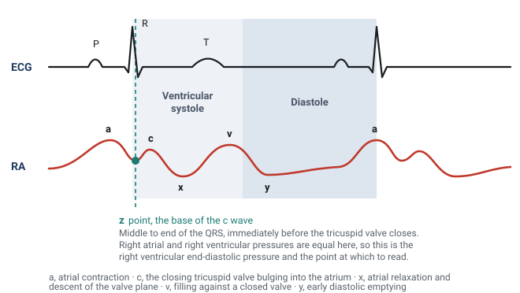
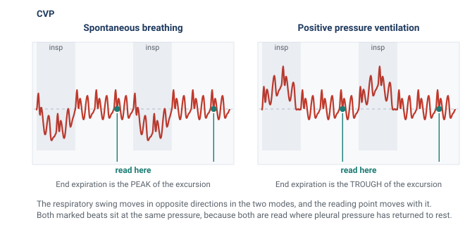
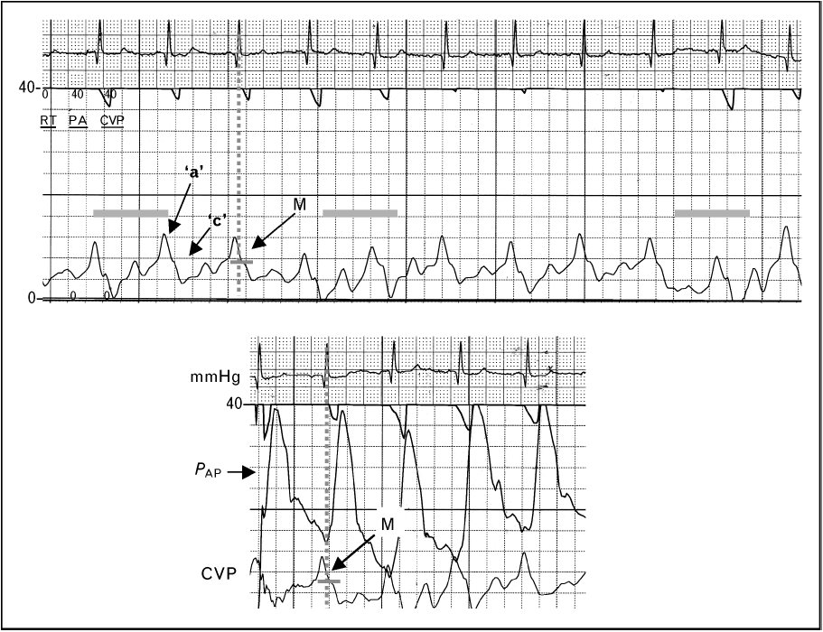
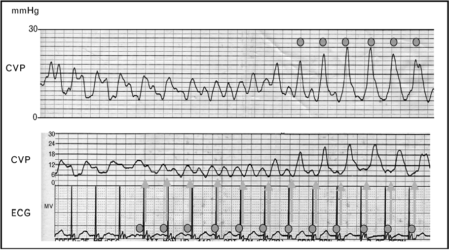
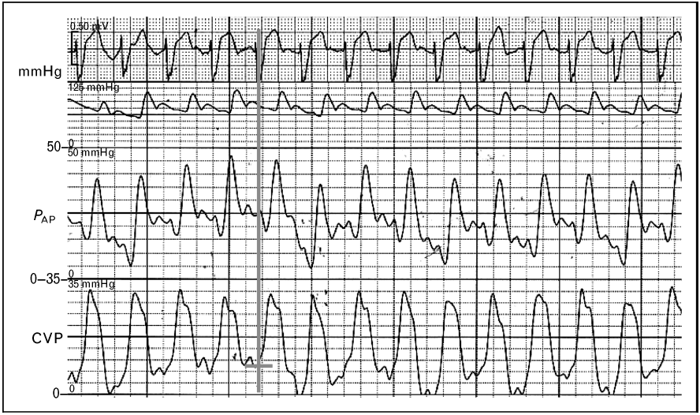
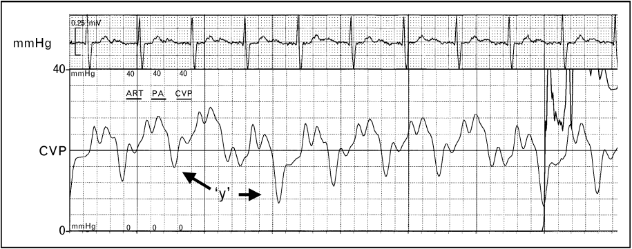
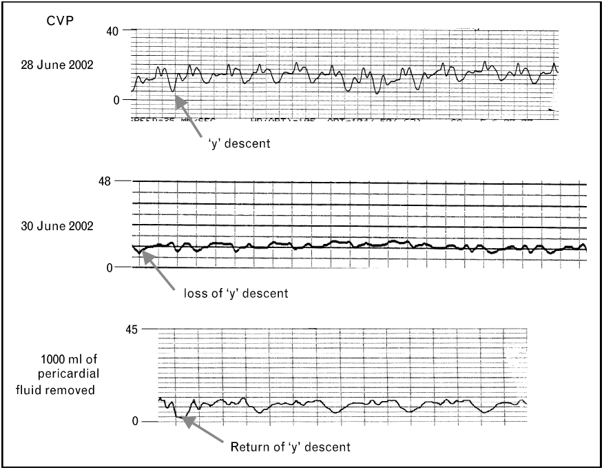
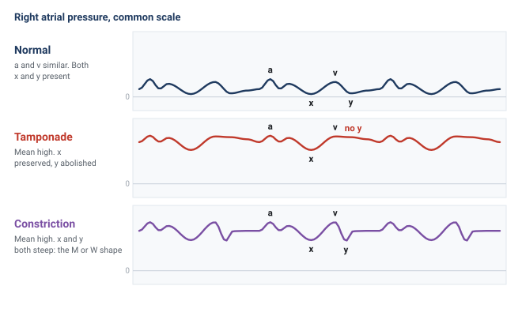

Module I14
Right atrial and CVP waveform interpretation
Three modules have already taken the right atrial pressure apart as a number. Module I8 established what it is physiologically, not an input the clinician sets but the pressure at which the venous return relationship and the cardiac function relationship intersect. Module I11 established what it cannot do, which is report preload. Module I3 established the conditions under which it means anything at all: a faithful fluid column, a transducer levelled at the phlebostatic axis, and the understanding that the monitor reports a pressure referenced to the room while the heart responds to the pressure across its wall.
What none of them touched is the shape. Between one atrial contraction and the next the pressure in the right atrium rises three times and falls twice, and every one of those five deflections is generated by a specific mechanical event with a specific cause. A mean value discards all of it. The waveform also escapes the objection that sinks the mean, because it does not ask you to convert a pressure into a volume. It reports directly on the rhythm, on the competence of the tricuspid valve, on the diastolic properties of the right ventricle, and on whether anything outside the heart is constraining it. Those are four separate diagnoses and the digital number contains none of them.
The module takes the trace in the order the bedside requires. First the normal waveform, deflection by deflection, each tied to the mechanical event that produces it and to the electrocardiographic landmark that dates it. Then the measurement, because a waveform read at the wrong point in the respiratory cycle, or from a system that has smoothed the detail away, is worse than no waveform at all. Then the pathological series, each abnormality traced back to its mechanism, so that a pattern you have never seen before is still readable.
What the right atrial trace is a recording of
Right atrial pressure and central venous pressure are used interchangeably throughout, as they are in practice, on the understanding that a catheter tip in the proximal superior vena cava sees essentially what a tip in the atrium sees. What the transducer records is the pressure generated by venous blood inside a thin-walled, highly distensible chamber that is in open continuity with the great veins for most of the cardiac cycle and sealed off from the ventricle for the rest of it.
Four properties determine the shape of the resulting trace, and every abnormality later in the module is a disturbance of one of them. Right ventricular function, systolic and diastolic. Pleural pressure, transmitted across the compliant atrial wall, which moves the whole trace up and down with every breath. The tricuspid valve, whose opening and closing define which parts of the cycle the atrium spends connected to the ventricle. And the cardiac rhythm, which sets whether the atrium contracts at all and whether it contracts at a useful moment.
One quantitative fact governs the interpretation of every deflection, and it does more work than any list of patterns.
For pressure changes produced by volume entering or leaving a compliant chamber, the size of the deflection depends principally on how much volume moves and the compliance of the chamber receiving it. A given volume shift generates a larger pressure change when the receiving chamber is less compliant. When flow must also cross an obstructed valve, however, the pressure gradient required to move that volume becomes an additional determinant. Reading a trace is therefore never a matter of recognising shapes from an atlas. It is a matter of asking what volume moved, what chamber received it, how compliant that chamber was, and whether anything obstructed the path between them.
The second thing to internalise is the scale. A normal mean right atrial pressure is 0 to 6 mmHg and the individual waves within it are a few millimetres of mercury tall, against fifty or sixty for a systemic arterial excursion. Both classes of error Module I3 catalogued therefore land harder here. A transducer set 10 cm below the phlebostatic axis adds about 7.4 mmHg to every reading, which nobody notices on an arterial line and which more than doubles a central venous pressure of 6. And an overdamped fluid column, which merely rounds off an arterial trace, can erase the c wave outright, blunt both descents, and turn the distinctive tracing of tricuspid regurgitation into something unremarkable. Everything below assumes a system that has passed a fast flush test. If it has not, the shape you are interpreting may belong to the tubing.
The normal waveform, wave by wave

The a wave: atrial contraction
The a wave is the first positive deflection of the cycle and it is produced by atrial systole. It follows the P wave rather than coinciding with it, because the P wave is the electrical event and the pressure rise is its mechanical consequence, separated by the time required for depolarisation to propagate and for the myocardium to develop tension. That is why the a wave sits inside the PR interval, and it is the same electromechanical delay Module I3 quantified on the arterial side.
Its amplitude follows the equation above. The volume moved is whatever the atrium can eject in the last fraction of diastole, and the compliance that matters is that of the right ventricle at end diastole, since that is the chamber receiving it. The normal right ventricle is the most compliant chamber in the heart, so a normal a wave is small. It is also normally the tallest of the three positive waves, slightly exceeding the v wave, which gives a useful internal reference: when the v wave clearly dominates a right atrial tracing, something has changed, and the something is usually the tricuspid valve.
The c wave: the tricuspid valve bulging backwards
The c wave is a small positive deflection that interrupts the fall in pressure after atrial systole. It is produced by the closing tricuspid valve bulging backwards into the atrium during isovolumic ventricular contraction, and it coincides with the end of the QRS complex. It is the smallest and briefest feature on the trace, and it is also the one most often absent from a bedside tracing, which is worth knowing because its absence is usually an artefact rather than a finding. A brief, low-amplitude deflection is exactly the kind of feature that carries most of its energy in the higher harmonics, and it is therefore exactly what an overdamped fluid column removes first. If the c wave has disappeared from a trace that used to have one, flush the line before concluding anything about the patient.
The x descent: the floor of the atrium drops away
After the c wave the pressure falls, and this x descent is generated by two events acting together. The atrium relaxes, which lowers its pressure directly. More importantly, the right ventricle contracts and ejects, and as it does the tricuspid annulus is pulled downwards towards the apex. The atrium is tethered to that annulus, so its floor descends, its cavity enlarges, and the pressure inside it falls further. The descent begins before the T wave and continues through ventricular ejection.
That mechanism makes the x descent the most diagnostically loaded feature on the trace. It requires the atrium to be effectively isolated from the ventricle during ejection. Significant tricuspid regurgitation therefore blunts the x descent, and torrential regurgitation may abolish it as the c and v waves merge into a broad systolic CV wave. Tricuspid regurgitation and cardiac tamponade sit at opposite ends of that single sentence.
The v wave: filling against a closed valve
The v wave is the rise in atrial pressure produced by venous return accumulating in an atrium whose outlet is shut. It builds through late ventricular systole, follows the T wave, and its crest marks the instant the tricuspid valve opens. Its height depends on how much blood arrives during that interval and on the compliance of the atrium and great veins receiving it, and because the venous reservoir is enormously compliant, as Module I8 established, a normal v wave is small. It is the standard marker of tricuspid competence for a mechanical reason: if the valve leaks, the atrium receives not only its venous inflow during systole but whatever the right ventricle ejects backwards through the incompetent orifice, at ventricular pressures. The v wave grows and, more tellingly, arrives early.
The y descent: early diastolic emptying
The tricuspid valve opens at the crest of the v wave and the atrium empties passively into the ventricle, producing the y descent. Its depth reflects how much pressure the atrium had accumulated and its steepness how readily the ventricle accepts the volume, so a compliant ventricle in early diastole gives a smooth, unhurried descent. Deviations run in both directions and both are informative. A ventricle that is stiff but not obstructed early gives an abrupt deep descent followed by an equally abrupt rebound as it reaches its limit. A ventricle that cannot enlarge at all, because something outside the heart prevents it, gives no descent.
Timing everything against the electrocardiogram
Every identification above is made by timing, not by shape, and the electrocardiogram is the clock. A tall systolic wave and a tall diastolic wave look identical in isolation, and the whole distinction between a large a wave and a large v wave is where the deflection sits relative to the QRS. Run the electrocardiogram on the same sweep, find the QRS, and read the trace forwards from there. The one caution, carried over from Module I3, is that the delay between an electrical event and the pressure it produces is real, varies between patients, and lengthens as contractility falls. Use the electrocardiogram to decide which cardiac event a deflection belongs to, not to assume the deflection was generated at the instant it appeared.
| Deflection | Mechanical event | ECG landmark | What changes its size |
|---|---|---|---|
| a wave | Atrial contraction ejecting into the ventricle | Follows the P wave, inside the PR interval | Force of atrial contraction, stiffness of the receiving ventricle, obstruction at the valve |
| c wave | Closing tricuspid valve bulging into the atrium | End of the QRS | Right ventricular systolic pressure, and the dynamic response of the monitoring system |
| x descent | Atrial relaxation plus descent of the tricuspid annulus during ejection | Begins before the T wave | Right ventricular systolic function, tricuspid competence, pericardial constraint |
| v wave | Atrial filling against a closed tricuspid valve | Follows the T wave, crest at valve opening | Venous return during systole, atrial and venous compliance, tricuspid regurgitation |
| y descent | Passive atrial emptying in early diastole | Begins before the next P wave | Atrial pressure at valve opening, right ventricular early diastolic compliance, pericardial constraint |
The z point, and why it is the place to read
A tracing with five deflections offers at least five candidate places to put the cursor, and they do not give the same answer. The convention that survives scrutiny is to read at the z point, the trough between the a wave and the c wave, in the middle to the end of the QRS complex.
The reason is mechanical rather than conventional. At that instant the atrium has finished contracting, the ventricle has begun to contract, and the tricuspid valve has not yet closed. Atrium and ventricle are still one continuous chamber and their pressures are equal. The pressure measured there is therefore the right ventricular end-diastolic pressure, read from a catheter that never entered the ventricle, provided there is no important end-diastolic pressure gradient across the tricuspid valve. That is the quantity the Frank-Starling relationship is about, subject to all the caveats Module I11 attached to converting a filling pressure into a preload. Magder reaches the same landmark from the other direction and calls it the base of the c wave, arguing that when leveling, respiratory effort and the physiological determinants of the pressure are all properly accounted for, the value at the base of the c wave gives a good indication of the filling of the right ventricle and a value that can be followed over time. The c wave itself does not have to be clearly visible for this principle to hold. It is a landmark for a physiologic instant, not a requirement for the measurement. Because the c wave is small and easily attenuated by an overdamped monitoring system, the equivalent end-diastolic point can still be located from the simultaneously displayed ECG and the surrounding atrial waveform. A missing c wave should not force the reader to choose a different phase of the cardiac cycle.
Consider what the alternatives measure instead. The peak of the a wave is the pressure the atrium generated while doing work on the ventricle, a transient produced by an active contraction rather than the pressure at which filling ended. In a stiff right ventricle it can sit several mmHg above the true end-diastolic pressure, and it does so precisely in the patients whose management turns on the difference. The trough of the x or y descent is a moment of active emptying and reports a pressure lower than any the ventricle sees at end diastole. And the digital mean on the monitor averages over a window the monitor chose, taking in the a wave, both descents and every millimetre of the respiratory swing, so in a patient with large excursions it has no temporal referent at all.
The z point has a second use that arises more often than the first. When there is no a wave, in atrial fibrillation or any rhythm without organised atrial systole, the usual landmark for end diastole is gone, and the z point remains identifiable from the QRS alone. It is the reference for right ventricular end-diastolic pressure in the absence of a waves, which describes a substantial fraction of an intensive care population.
That does not make mean right atrial pressure a meaningless or "incorrect" pressure. It answers a different physiologic question. Mean RAP represents the average downstream pressure against which the systemic venous circulation returns blood and is therefore relevant to the venous-return gradient and to venous congestion. The z point is chosen when the question is specifically the pressure present at the end of right ventricular filling. A waveform therefore contains several legitimate pressures. The error is asking one of them to answer a question that belongs to another.
Even a perfectly timed intravascular pressure is not automatically the pressure distending the right ventricle. The transducer reports pressure relative to atmosphere, whereas ventricular filling depends on transmural pressure: the pressure inside the chamber relative to the pressure surrounding it. This distinction becomes particularly important when pleural or pericardial pressure is substantially abnormal. The correct cardiac-cycle landmark therefore solves the timing problem, not every limitation of filling-pressure interpretation.
Identifying the correct point within the cardiac cycle solves only half of the measurement. Right atrial pressure also varies across the respiratory cycle because changes in pleural pressure are transmitted almost completely to the thin-walled atrium. A properly timed right atrial pressure therefore has two coordinates: a cardiac coordinate, the z point or base of the c wave, and a respiratory coordinate, the moment at which respiratory muscle pressure contributes least to the measured value. The next step is to identify that respiratory reference correctly.
Measuring a central venous pressure properly
The cardiac point is only half of the measurement
Choosing the correct point in the cardiac cycle is not enough. Right atrial pressure also moves with respiration because the thin-walled atrium is exposed to changes in pleural pressure. The same cardiac beat can therefore appear at different pressures depending on where it occurs within the respiratory cycle.
Where in the respiratory cycle to read
The usual reference is end expiration, because in a passively breathing patient respiratory muscle pressure is closest to zero and pleural pressure is closest to its resting value at that moment. During spontaneous breathing, inspiration lowers pleural pressure and pulls the right atrial trace downward, so end expiration lies toward the upper end of the respiratory excursion, the peak. During positive-pressure ventilation, inspiration raises pleural pressure and pushes the trace upward, so end expiration lies toward the lower end, the trough. The waveform moves in opposite directions, but the physiologic reference is the same: a passive end-expiratory moment.

The exception: active expiration
The end-expiratory convention assumes that expiration is passive. If the patient actively recruits expiratory muscles, that assumption fails. Abdominal and expiratory muscle contraction progressively raises pleural pressure during expiration, pushing the right atrial pressure upward for a reason external to the heart. End expiration then becomes the point at which the respiratory pressure artifact may be greatest rather than smallest.
In active expiration, measure at the beginning of expiration, before expiratory muscle contraction has substantially raised pleural pressure.
Magder and colleagues measured how often the passive-expiration assumption holds. Reviewing the tracings nurses took at the morning shift change in a consecutive series of 119 intensive care patients, 60 after cardiac surgery and 59 after non-cardiac surgery, they found 29 percent had active expiration, split evenly between a pattern in which the pressure falls during expiration and one in which it rises. It was not predicted by the type of surgery, bronchodilator use, chronic obstructive lung disease or abdominal distension, and it was commoner in patients who were neither ventilated nor on vasopressors, which is to say the more awake ones. It cannot be anticipated from the chart, only seen on the trace, which is why the beginning-of-expiration reading described above is the one to use whenever active expiration is present.
Read the trace, not the number
The cardiac and respiratory landmarks tell us when to read the pressure. They do not guarantee that the pressure displayed at that moment is accurate. This matters particularly on the venous side, where the physiologic gradients of interest are only a few millimetres of mercury wide. An error that would barely change the interpretation of a systemic arterial pressure can equal or exceed the entire pressure gradient driving venous return. The waveform therefore has to be trustworthy before a cursor is placed on it.
Start by looking at the trace rather than the digital number. Set the pressure scale so that the venous waveform occupies a useful portion of the display instead of sitting nearly flat at the bottom of a 0 to 50 mmHg channel. Sweep speed should match the question being asked: use a slower sweep when identifying the respiratory excursion and a faster one when separating the a, c and v waves and the x and y descents. Freeze or print the tracing before measuring it. The monitor may calculate a number continuously, but the clinician should be able to identify the physiologic event from which that number is being taken. The reassuring finding from the active expiration study above is that this is a teachable skill and not a specialist one: agreement on the value between a physician and a bedside nurse was 96 percent. The failure mode is not that people read tracings badly. It is that they do not look at tracings at all.
The dynamic response of the catheter-transducer system matters just as much. An overdamped venous trace can flatten the small c wave, blunt the x and y descents, and make a pathologic waveform appear deceptively normal. An underdamped system can introduce oscillations that were never present in the patient. A fast-flush test should therefore precede interpretation whenever waveform fidelity is uncertain. If the system cannot reproduce the pressure waveform faithfully, greater precision in cursor placement only produces a more precise measurement of the tubing.
The mechanical preconditions
Three additional conditions should then be checked.
- Level and zero the transducer correctly. The transducer should be referenced to the phlebostatic axis and re-levelled whenever bed height or patient position changes. Hydrostatic error is numerically identical whether the pressure being measured is arterial or venous, but its relative importance is far greater when the true pressure is only a few mmHg. A small leveling error can therefore transform a normal right atrial pressure into an apparently elevated one.
- Nothing should be infusing through the transduced lumen. Flow through the catheter creates an additional pressure gradient along the lumen, so the transducer records not only the pressure in the vessel but also part of the pressure required to drive the infusion. The displayed pressure can consequently be falsely elevated, particularly with smaller lumens or faster infusion rates.
- Know where the catheter tip is. A central venous pressure can only be interpreted as right atrial pressure if the catheter is actually sampling the central thoracic venous compartment. A properly positioned tip in the lower superior vena cava or near the cavoatrial junction sees essentially the same pressure as the right atrium because there is normally little pressure gradient between them. A catheter that has migrated, or was inadvertently positioned in another vessel such as the contralateral subclavian or internal jugular vein, is measuring pressure at that location instead. The same principle is why a femoral catheter is interpreted differently: it reports the pressure in the abdominal inferior vena cava, which tracks right atrial pressure closely, within about a millimetre of mercury, in a supine patient with a normal abdomen. Raise the intra-abdominal pressure and the agreement fails, for the reason Module I8 derived at length: once abdominal pressure exceeds the pressure inside the vessel, the abdominal segment of the cava behaves as a Starling resistor, and the pressure measured below it reports abdominal pressure rather than anything happening in the chest. Before interpreting an unexpected waveform or pressure as physiology, confirm that the catheter tip is where you think it is.
These technical checks are not separate from the physiology. They determine whether the waveform on the screen is actually the waveform generated by the patient. Only after they are satisfied does the cardiac and respiratory timing developed above become useful.
Abnormal waveforms, and what each one is telling you
The abnormalities below are the classical series and they are presented in the order the mechanism suggests rather than by frequency. Each one is a disturbance of one of the four determinants named at the start: the rhythm, the tricuspid valve, right ventricular diastolic properties, or something outside the heart constraining it. The tracings are the case series from Magder's review of central venous pressure monitoring, which is where this curriculum's teaching on the subject originates.
Prominent a waves

Apply the compliance equation. A tall a wave means the atrium moved more volume, or the chamber it moved the volume into was stiffer, or the orifice it moved the volume through was narrowed, and the differential follows directly from those three.
The commonest version is a stiff right ventricle. Anything that chronically pressure-loads the right ventricle hypertrophies it, and a hypertrophied ventricle is a less compliant one, so the same atrial contraction generates a larger pressure rise. Pulmonary hypertension of any cause is the usual setting. The acute version is the same physiology on a shorter timescale: a submassive pulmonary embolus abruptly raises right ventricular afterload, the ventricle dilates onto a steep part of its diastolic pressure-volume relationship, and the a wave grows. The third mechanism is obstruction rather than stiffness. In tricuspid stenosis the atrium contracts against a narrowed orifice and generates a high pressure to drive flow across it, so the a wave is tall for a reason that has nothing to do with the ventricle. In all three the mean rises with the a wave, the monitor reports a high filling pressure, and the reflex is to withhold volume from a patient who may well be underfilled. Read the z point.
Cannon a waves

A cannon a wave is what happens when the atrium contracts against a tricuspid valve that is already shut. Ordinarily atrial systole precedes ventricular systole and the volume it ejects has somewhere to go. If the two coincide, the volume has nowhere to go, the compliance term in the equation collapses towards that of a closed chamber, and the pressure the atrium generates is delivered in its entirety into the venous system as a single very tall spike.
The settings are all forms of atrioventricular dissociation or retrograde conduction: complete heart block, ventricular tachycardia, ventricular pacing with retrograde ventriculo-atrial conduction, and atrioventricular nodal reentrant tachycardia, where atrial and ventricular activation are near simultaneous. The distinction that carries diagnostic weight is between intermittent and irregular cannon waves and regular ones on every beat. In true dissociation the atria and ventricles run at independent rates, so the timing of atrial systole relative to the closed valve drifts, and cannon waves appear irregularly whenever the two happen to coincide. In one to one retrograde conduction every ventricular beat is followed by an atrial beat at a fixed short interval, so every beat produces a cannon wave.
That distinction has an immediate use. A patient in a wide complex tachycardia with intermittent cannon a waves on the venous trace has demonstrable atrioventricular dissociation, and atrioventricular dissociation in a wide complex tachycardia is strong evidence for ventricular tachycardia. The venous trace is doing electrophysiology.
The regular version is the hemodynamic substrate of pacemaker syndrome. Ellenbogen and colleagues studied 16 patients with a left ventricular ejection fraction above 35 percent during atrial, ventricular and ventriculo-atrial pacing at a cycle length of 600 milliseconds. During ventriculo-atrial pacing cardiac output fell by 10 percent, forearm vascular resistance rose from 52 (S.D. +/- 7) to 70 (S.D. +/- 9) units, and plasma norepinephrine rose from 183 (S.D. +/- 27) to 232 (S.D. +/- 27) pg/mL. Regional alpha blockade with intra-arterial phentolamine nearly abolished the vascular response, placing the mechanism in the arterial baroreflex rather than in the venous congestion itself. The cannon wave is the visible marker of a loss of atrioventricular synchrony whose cost is measurable in output and in reflex vasoconstriction, and which is correctable by restoring synchrony.
Absent a waves in atrial fibrillation
The mirror image of a cannon wave is no wave at all. In atrial fibrillation there is no organised atrial systole, so there is no a wave, and the atrial relaxation component of the x descent goes with it. What remains is a c-v pattern, often with an irregular baseline, and with beat to beat variation in the height of the v wave because the diastolic filling interval preceding each beat differs.
Two consequences follow. The first is practical: with the a wave gone, the landmark most clinicians use to find end diastole is gone, and the z point, identifiable from the QRS alone, becomes the only defensible reading point. The second is physiological and it deserves more weight than it usually gets. The contribution of atrial systole to ventricular filling is negligible when the ventricle is compliant, because a compliant ventricle fills perfectly well passively. It becomes substantial when the ventricle is stiff, because a stiff ventricle depends on the atrial kick to complete its filling. Those are precisely the patients whose a wave was tall in the first place. So the patients who lose the most hemodynamically from new atrial fibrillation are identifiable in advance from the venous trace, and they are the ones in whom rate control alone is least likely to be sufficient.
The fused CV wave of tricuspid regurgitation

An incompetent tricuspid valve does two things to the trace at once, and only one of them is the tall v wave everyone remembers. During ventricular systole the regurgitant jet delivers volume into the atrium at ventricular pressures. The v wave therefore grows and, more importantly, arrives early, since it no longer has to wait for venous return to fill the atrium. At the same time the x descent, which exists only because the atrium is sealed off from the ventricle during ejection, is abolished. The c wave and the early v wave merge across the gap the x descent used to occupy, and the result is a single broad systolic wave, the fused CV wave. In severe regurgitation the venous trace comes to resemble a ventricular pressure trace, which is the origin of the term ventricularisation.
The identification is made against the electrocardiogram, because the whole point is that a large deflection now occupies ventricular systole where a descent should be. This is where a habit of timing rather than pattern matching earns its keep.
A recent analysis supports the emphasis on the descent rather than the peak. Akabane and colleagues analysed the central venous pressure tracings of 436 surgical patients who had preoperative echocardiography, constructing indices from the waveform and testing them against echocardiographic regurgitation grade. The difference between the c wave and the y descent, and the difference between the x descent and the y descent, both varied significantly across severity, and the x descent minus y descent index separated none-to-moderate from severe regurgitation with an area under the receiver operating characteristic curve of 0.83, with a wide confidence interval of 0.68 to 0.98 reflecting the small number of severe cases. Their deep learning classifier reached a validation accuracy of 0.97, which is a statement about the information the waveform contains rather than a bedside test. The usable lesson is the first one: what changes reliably with severity is the relationship between the descents, so look for the missing x and not only for the tall v.
Three practical consequences follow. The mean right atrial pressure rises in significant regurgitation, so the trace reports a high filling pressure in a patient whose effective forward filling may be inadequate. During catheter placement a ventricularised atrial trace can be mistaken for a right ventricular trace and prompt inappropriate advancement. And thermodilution cardiac output becomes unreliable when a fraction of the indicator is shuttled backwards and forwards across the valve, which Module I16 takes up with the direction of the error.
A prominent y descent

A prominent y descent is a statement about early diastole, and specifically about the combination of a high atrial pressure at the moment the valve opens and a ventricle that offers little resistance to the first part of filling. The pressure falls steeply because the gradient across the open valve is large. It then rebounds abruptly because the chamber receiving the volume is stiff or externally constrained and reaches its limit almost immediately. The steep descent and the abrupt plateau are two halves of the same finding and neither is interpretable without the other.
The conditions that produce it combine a high venous pressure with a non-compliant right ventricle: right ventricular hypertrophy from chronic pulmonary hypertension, constrictive pericarditis, and restrictive cardiomyopathy. Severe tricuspid regurgitation belongs on the list for a different reason, because the atrium has an unusually large volume to discharge when the valve opens.
The tracing above comes from a patient with chronic pulmonary hypertension and carries two further features that are easy to miss and useful when present. The interval between the a wave and the c wave is prolonged, reflecting the prolonged right ventricular contraction that pressure overload produces, and the c wave itself is elevated, because a markedly raised right ventricular systolic pressure is transmitted back onto the closed tricuspid valve. Neither is typical of constriction or restriction, so an a to c delay with a tall c wave alongside a prominent y descent argues for pulmonary hypertension over a pericardial cause.
The blunted y descent of tamponade

Tamponade is the cleanest application of the compliance equation in the whole module. Once the pericardium is full, the volume inside it is effectively fixed, and pericardial pressure acts on all four chambers at once. Blood can only enter the right heart at a moment when something else inside the pericardium is getting smaller. That moment is ventricular ejection. So during systole, ventricular ejection creates room within the fixed pericardial volume while atrial relaxation and downward displacement of the tricuspid annulus increase atrial capacity. Right atrial pressure can therefore fall despite continued venous inflow, preserving and often accentuating the x descent. In early diastole, when the atrium would normally empty into a ventricle that is enlarging, the ventricle cannot enlarge, because doing so would require the total pericardial volume to increase. The y descent is attenuated or abolished, and the trace acquires its characteristic single-descent appearance.
Reddy and colleagues established the hemodynamic frame in 19 patients studied before and after pericardiocentesis. In the 14 with tamponade, right atrial pressure fell from 16 (S.D. +/- 4) to 7 (S.D. +/- 5 mmHg) with drainage, cardiac output rose from 3.87 (S.D. +/- 1.77) to 7 (S.D. +/- 2.2 L/min), and inspiratory systemic arterial pulse pressure rose from 45 (S.D. +/- 29) to 81 (S.D. +/- 23 mmHg). In every tamponade patient the right ventricular end-diastolic pressure was elevated and equal to the pericardial pressure, and that equalisation was uniformly absent in the five patients with an effusion but without tamponade. Equalisation of diastolic pressures is therefore the hemodynamic definition of the condition, and the flattened venous trace is what equalisation looks like on a single channel.
One point of caution about the source material, because the curriculum's own slides are inconsistent on it. The slide text describes tamponade as causing loss of both the x and the y descent. The mechanism above does not support that, the standard descriptions of tamponade physiology, such as Appleton and colleagues' review, do not support it, and the annotated tracing on the same slide marks the loss of the y descent alone. Read tamponade as a preserved x with an absent y. A trace that has lost both descents is a flat trace, and a flat trace on a venous channel should prompt a fast flush test before it prompts a diagnosis.
Tamponade versus constriction

Both conditions raise the mean right atrial pressure, both equalise the diastolic pressures of all four chambers, and both present with predominantly right-sided heart failure. The mean number is therefore useless for separating them, and the waveform is not. The discriminator is the y descent, and the reason is a difference in when in the cycle the constraint operates.
In constriction the pericardium is rigid but the volume inside it is not yet at its limit when diastole begins, so early filling is not merely permitted but accelerated, the atrial pressure being high and the ventricle at that instant small. Filling proceeds rapidly until the ventricle reaches the fixed shell and then stops abruptly. On the ventricular trace this is the dip and plateau, or square root sign. On the venous trace it is a steep y descent followed by an immediate plateau, and combined with the preserved x descent it gives the classical M or W shaped tracing with two deep descents per cycle. In tamponade the constraint operates from the very start of diastole, because the pericardial space is already at its limit, so there is no unimpeded early phase and no y descent. Kussmaul's sign separates them in the same direction: a rise, or a failure to fall, in venous pressure during spontaneous inspiration means the extra venous return recruited by the inspiratory fall in pleural pressure has nowhere to go, which is the situation in constriction, where the rigid shell isolates the chambers from that fall. The inspiratory fall in right atrial pressure is preserved in tamponade, which is why Kussmaul's sign is not a feature of it.
The limit of the waveform has to be stated, because this is exactly where a confident pattern-reader goes wrong. A high mean pressure with equalised diastolic pressures and a prominent y descent narrows the field to constriction and restrictive myocardial disease, and it does not separate them, because both share that picture. Two catheterisation studies show how much further one has to go. Hurrell and colleagues studied 36 patients with high-fidelity manometry and respirometry, 15 with surgically proven constriction, and found that the conventional criteria based on equalisation of pressures lacked sensitivity and specificity and failed to distinguish the groups, while discordance between right and left ventricular systolic pressures during inspiration, the signature of enhanced ventricular interdependence, did distinguish them. Talreja and colleagues formalised that in 100 consecutive patients, 59 with surgically documented constriction and 41 with restrictive myocardial disease, reporting that the predictive accuracy of any conventional catheterisation criterion was below 75 percent while the systolic area index, the ratio of right to left ventricular systolic pressure-time area in inspiration versus expiration, had a sensitivity of 97 percent and a predictive accuracy of 100 percent. Geske and colleagues give the contemporary synthesis.
So the right atrial waveform is a screening instrument of real value: it tells you that filling is constrained, it tells you whether the constraint operates in early diastole or throughout it, and it therefore separates tamponade from the constriction and restriction pair. It does not separate constriction from restriction, and no single-chamber recording can, because the finding that distinguishes them is a relationship between two ventricles across the respiratory cycle.
| Finding | Mechanism | What to think of | Mean RAP |
|---|---|---|---|
| Prominent a wave | Atrium contracting into a stiff ventricle or through a narrowed valve | Pulmonary hypertension, RV hypertrophy, acute RV pressure overload, tricuspid stenosis | Raised, and the mean overstates the true filling pressure |
| Cannon a wave | Atrium contracting against a closed tricuspid valve | AV dissociation, complete heart block, VT, ventricular pacing with retrograde conduction, AVNRT | Intermittently spiked |
| Absent a wave | No organised atrial systole | Atrial fibrillation, and any rhythm without effective atrial contraction | Unchanged, but the reading point must be the z point |
| Fused CV wave, absent x descent | Systolic regurgitant flow into the atrium, and loss of atrial isolation during ejection | Tricuspid regurgitation | Raised, and forward filling may still be inadequate |
| Prominent y descent | High atrial pressure emptying into a ventricle that is stiff but not obstructed early | RV hypertrophy in pulmonary hypertension, constriction, restriction, RV failure, severe TR | Raised |
| Absent y descent, preserved x | Filling possible only while the ventricles are emptying | Cardiac tamponade | Raised, with equalised diastolic pressures |
| Deep x and deep y, the M or W pattern | Rapid early filling that stops abruptly at a fixed pericardial limit | Constrictive pericarditis, restrictive cardiomyopathy | Raised, with equalised diastolic pressures |
What the waveform is worth
The argument running through the last three modules is that right atrial pressure is a poor answer to the question most often asked of it, and nothing here rehabilitates the mean value as a volume status number. What the waveform does is change the question. It is not a filling pressure with decoration, it is a mechanical recording of four separate things the right heart is doing, each diagnosable in its own right without converting a pressure into a volume and therefore without the compliance assumption that made the mean uninterpretable. A cannon a wave is not weak evidence about volume, it is direct evidence of atrioventricular dissociation. A broad systolic CV wave with loss of the x descent is not weak evidence about volume. It is a mechanical signature of systolic regurgitant communication across the tricuspid valve. An absent y descent is a statement about when in the cycle the heart is permitted to fill. That is why the long argument over whether central venous pressure should be measured at all, set out by De Backer and Vincent as ten questions and ten answers, is really an argument about one use of one number rather than about the catheter. Two habits carry almost all of the remaining value and both are free: look at the trace instead of the number, and place the cursor at the z point/base of the c wave at the appropriate respiratory reference point, normally end expiration, or the beginning of expiration when expiration is active.
The same discipline transfers directly to the other waveform a pulmonary artery catheter provides. Module I15 takes the catheter past the tricuspid valve and applies the same logic to the wedge tracing, where the a and v waves have different meanings, where the large v wave of mitral regurgitation does to the wedge what the fused CV wave does here, and where a chain of assumptions has to hold before the pressure can be read as a left ventricular end-diastolic pressure at all. Module I9 takes up the right ventricle itself, the chamber whose diastolic properties this trace has been reporting on throughout. And the reading of the venous waveform as a marker of organ congestion, rather than of cardiac filling, belongs to the Expert pathway.
References
- Magder S. Central venous pressure monitoring. Curr Opin Crit Care. 2006;12(3):219-227. doi:10.1097/01.ccx.0000224866.01453.43.
- Magder S. Right atrial pressure in the critically ill: how to measure, what is the value, what are the limitations? Chest. 2017;151(4):908-916. doi:10.1016/j.chest.2016.10.026.
- Magder S. Understanding central venous pressure: not a preload index? Curr Opin Crit Care. 2015;21(5):369-375. doi:10.1097/MCC.0000000000000238.
- Magder S, Serri K, Verscheure S, Chauvin R, Goldberg P. Active expiration and the measurement of central venous pressure. J Intensive Care Med. 2018;33(7):430-435. doi:10.1177/0885066616678578.
- Magder S. Invasive intravascular hemodynamic monitoring: technical issues. Crit Care Clin. 2007;23(3):401-414. doi:10.1016/j.ccc.2007.07.004.
- De Backer D, Vincent JL. Should we measure the central venous pressure to guide fluid management? Ten answers to 10 questions. Crit Care. 2018;22(1):43. doi:10.1186/s13054-018-1959-3. Free full text.
- Ellenbogen KA, Thames MD, Mohanty PK. New insights into pacemaker syndrome gained from hemodynamic, humoral and vascular responses during ventriculo-atrial pacing. Am J Cardiol. 1990;65(1):53-59. doi:10.1016/0002-9149(90)90025-v.
- Akabane S, Asamoto M, Azuma S, Otsuji M, Uchida K. Assessment of the relationship between central venous pressure waveform and the severity of tricuspid valve regurgitation using data science. Sci Rep. 2024;14(1):24839. doi:10.1038/s41598-024-74890-8. Free full text.
- Reddy PS, Curtiss EI, O'Toole JD, Shaver JA. Cardiac tamponade: hemodynamic observations in man. Circulation. 1978;58(2):265-272. doi:10.1161/01.cir.58.2.265.
- Hurrell DG, Nishimura RA, Higano ST, Appleton CP, Danielson GK, Holmes DR Jr, Tajik AJ. Value of dynamic respiratory changes in left and right ventricular pressures for the diagnosis of constrictive pericarditis. Circulation. 1996;93(11):2007-2013. doi:10.1161/01.cir.93.11.2007.
- Talreja DR, Nishimura RA, Oh JK, Holmes DR. Constrictive pericarditis in the modern era: novel criteria for diagnosis in the cardiac catheterization laboratory. J Am Coll Cardiol. 2008;51(3):315-319. doi:10.1016/j.jacc.2007.09.039.
- Geske JB, Anavekar NS, Nishimura RA, Oh JK, Gersh BJ. Differentiation of constriction and restriction: complex cardiovascular hemodynamics. J Am Coll Cardiol. 2016;68(21):2329-2347. doi:10.1016/j.jacc.2016.08.050.
- Appleton C, Gillam L, Koulogiannis K. Cardiac tamponade. Cardiol Clin. 2017;35(4):525-537. doi:10.1016/j.ccl.2017.07.006.